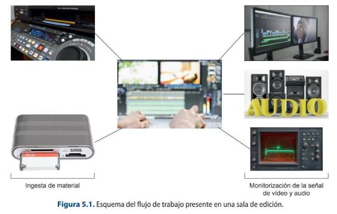
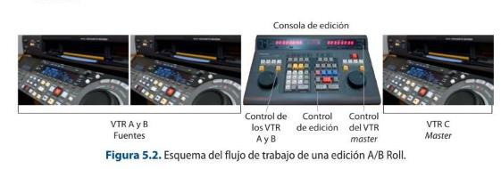
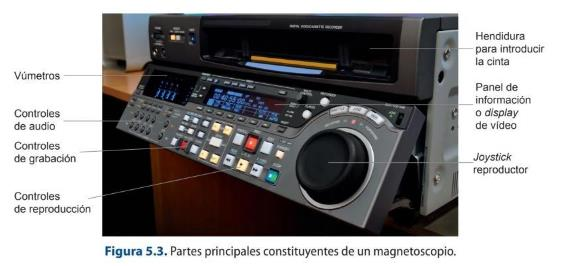
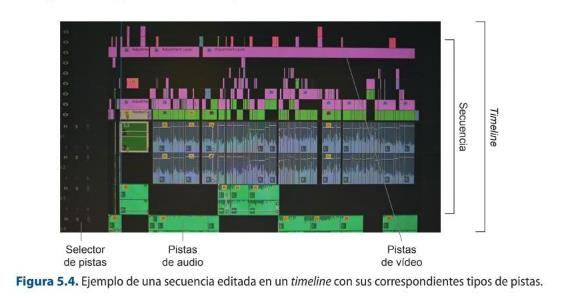
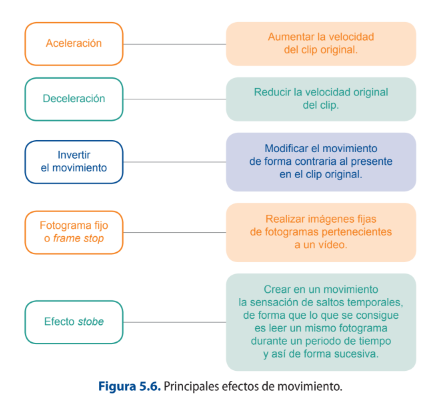
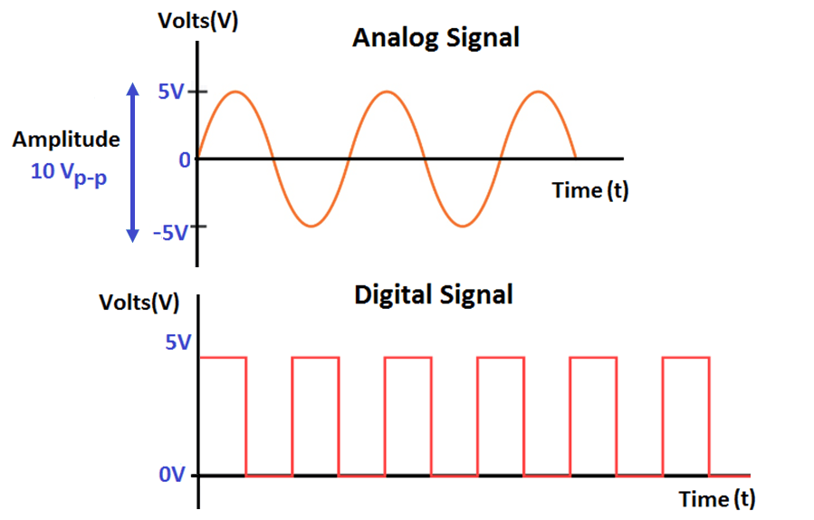

UNIT 5: POST-PRODUCTION EQUIPMENT IN AUDIOVISUAL PROJECTS
5.1 Determining the configuration of technical post-production resources in audiovisual projects
When considering the elaboration of an audiovisual product, whatever the type of genre and format to which it belongs, the organisation of the process in a series of consecutive phases that will give rise to the final product must be taken into account. Audiovisual projects are carried out in three basic phases:
1. Pre-production stage: where the idea is conceived and the necessary technical documentation is drawn up in the different departments.
2. Production stage: where the actual recording of the audiovisual project takes place.
3. Post-production stage: where the final editing and finishing of the audio-visual piece is carried out. The above-mentioned phases are the fundamental stages that can be found in the elaboration of an audiovisual product, although a fourth one must be considered which, although it is not strictly speaking part of the creation process, is of great importance. This stage is the distribution of the material.
The post-production stage is where all the elements that have been recorded and produced in the previous stage are finally put together. Each audiovisual product, depending on its genre and format characteristics, will have these stages organised in one way or another. For example, the pieces of a news programme are edited before the production of the final programme, which is live.
Once the recording of the material to be used in an audiovisual product has been completed, it goes to the editing booths. The editing rooms have a characteristic and variable configuration, depending on the type of channel or production company in which they are working, but the minimum equipment to be found is as follows:
Computer system: a key piece of equipment in which the software for editing and working with video and audio is incorporated. The table on which the equipment is supported must comply with regulations regarding safety at work and the accommodation of the user's workstation in order to avoid health problems.
Equipment to facilitate the capturing and dumping of material or video recorders.
Reference monitors, where both video and audio products can be viewed.
Equipment for viewing the representation of the video and audio signal (waveform monitor and vectorscope).
A room conditioned acoustically and luminously to the activity to be carried out.
Therefore, the basic technical equipment needed in an editing suite could be summarised in the block diagram shown in Figure 5.1.

5.2. Technical and operational qualities of linear and non-linear video post-production equipment
There are two basic types of editing process, which are linear and non-linear editing. Linear editing is that which is established by a certain order. There are two main linear editing procedures: cut editing and A/B Roll editing. Cut editing employs two VTRs - one source and one receiver - to -one source and one receiver- to perform a direct edit from one VTR to the other.
History of Video Editing
Another procedure is A/B Roll editing, which consists of editing the final product using
an editing console and several VTRs, a playback or source VTR and a master VTR, which
is the one that picks up the editing decisions made by the operator. All the working
VTRs must be remote in order to operate them through the console.
The console is used to carry out the different operations related to editing, so that the
following workflow is followed:
the VTR that is going to have the information on tape support is selected
the entry and exit points are marked, which correspond to the time codes that delimit
the fragment of the tape to be used;
the type of editing and the tracks to be used are selected on the console
the information is transferred to the master tape containing the edited piece on the
destination VTR, which, once finished, is launched for broadcasting.
According to the type of editing we can distinguish in two different:
-By insert: its characteristic is that it maintains the time code present on the master
tape and it is where the entry or exit point is selected, in order to proceed to place the
video or audio, or both.
-By assemble: it overwrites the timecode on the master tape so that it is the first
operation to be carried out at the time of starting the editing, as it is necessary to have
a continuous TC.

A fundamental aspect of working with VTRs is the time code. There are three main types of time code used in these devices:
1. CTL or Control Track Longitudinal: this is a system that uses the control track pulses as a frame counter. This type of mechanism is useful in cases where there is no continuous CT or when working with devices that do not have time control.
2. LTC or Longitudinal Time Code: helps to establish the correspondence between the image and the time code. If it is not recorded continuously, it may have time jumps.
3.VITC or Vertical Interval Time Code: is the time code track in the vertical blanking interval of the video signal, which is continuous and does not stop generating even if the device is stopped.
With the implementation of technological improvements in post-production processes, little by little, this type of editing system was no longer used. The main improvement that made this type of processes obsolete was the digitalization of information and, therefore, the implementation of new technological systems that allowed working with video and audio digitally. This led to the introduction of computers in editing workstations and, with them, the installation of proprietary software for this aspect. Thus, non-linear editing arose, which allows the handling of different information, both video and audio, in a discontinuous and random way in the editing process.
The workflow of the new type of editing was initially based on the digitization of the information to be used. To do this, the coverage recorded on tape had to be reproduced on a tape recorder which, connected by means of a FireWire cable to the computer's CPU, allowed both devices to be connected and the software to capture this material. In the same way, when it was time to take the programme out for broadcast, a dump had to be made to the destination VTR where the programme that had been edited in the corresponding software was recorded.
Another device used to carry out A/B Roll editing is the editing suitcases using video recorders, constituting a portable system that allows this process to be speeded up at a distance from the physical company.
Over the years, the digitalization process also reached the recording cameras, leaving aside the use of tape support to use memory cards in which the different recorded takes are stored as video and audio clips. Thus, in order to ingest the recorded information, it is no longer necessary to use video recorders, but it can be done by means of card reader devices which, nowadays, are even integrated in the CPUs themselves.
All this has led to a series of advances that have improved editing and recording techniques, and have led to the acceleration and streamlining of processes.
Modern NLEs, GPU acceleration and colour-managed workflows
Non-linear editing today runs on GPU-accelerated software — DaVinci Resolve, Adobe Premiere Pro and Final Cut Pro — that edits, grades, mixes and finishes in one application. High-resolution RAW is handled through proxy workflows, and colour is managed end-to-end with ACES for consistent results and HDR grading.
Review and hand-off are increasingly cloud-based (Frame.io, Resolve Project Server), and AI tools now assist with transcription/subtitles, shot matching and object removal.
Sources: DaVinci Resolve (Wikipedia) · Academy Color Encoding System (Wikipedia)
Linear/tape editing (VTRs)
Linear editing with VTRs and edit controllers — assemble/insert edits between tape machines — is obsolete. Everything is non-linear and file-based; the tape decks described here survive only for archive digitisation.
5.2.1. Video Tape Recorders (VTR), pre-editors, digital editors and editing controls
Video tape recorders, also known as VTRs, are video and audio recorders and players which can be analogue or digital.
Analogue VTRs are based on the laws of electromagnetic induction. Thus, an electric current was produced that circulated through the coils located in the recording heads, creating a magnetic field that was transmitted through all the parts of the core, which was made up of an air gap that had a peculiar characteristic with respect to this magnetic field: the offering of a great resistance or reluctance as it passed through. This is the point at which, when passing through it, the tape becomes magnetised.
The contact of the tape and the recording and reproducing head of the apparatus is produced by a process called helical scanning. This helical scanning process consists of a specific way of moving the tape which is wound on a drum that rotates at a constant speed and allows the tape to move longitudinally with a speed that determines the writing speed of the system.

The most common professional digital video formats related to this type of technology are: Digital Betacam, DVCPRO, DVCAM, Digital S, Betacam SX and HD CAM. All these models are now completely obsolete.
Another type of device is the P2 tape recorder, a portable recorder that allows the use of P2 cards. This type of tool facilitates the monitoring, recording, conversion and
archiving of P2 material, as well as the visualization of the different materials that have been recorded on the card.
5.2.2. PC/MAC workstations and post-production software
Working with video and audio at a professional level requires needs that, with the technological advances that have been made and the socialization of these advances, are accessible to almost everyone. The first big decision would be to choose the type of operating system you want to work with. There are a multitude of editing and post- production programmes for the different operating systems, especially for the two most widely used: Windows and Mac. In the past, it was more of a problem to find software that was compatible with both systems, but nowadays this issue has been minimised especially for those software applications developed in the PC environment. Mac software, such as Final Cut, is more reluctant to do so, as only versions for this platform are available.
Another important decision is whether you want to work on a desktop or a laptop. The decision on this question should be related to the type of work you are going to carry out, as these characteristics of your work will determine your choice.
The requirements necessary to be able to work with professional video and audio file editing will vary depending on the needs, but there are a series of components that must be taken into account, such as:
1. Graphics card: this is, nowadays, one of the determining elements to establish the rendering of the projects and to be able to visualize in real time materials recorded in high resolution, such as the 4K files generated by cameras like the Black Magic.
2. Hard disks: this is a key element when moving material in editing programmes, as when this type of operation is carried out, several operations are performed simultaneously, which require the disk to work more fluidly and at a faster speed. Nowadays, the hard disks that offer the best performance are SSDs.
3. RAM memory: RAM memory is in charge of operating with the data in parallel to being loaded on the hard disk. The higher the RAM memory capacity of the device, the faster the process will be, especially with all aspects related to 2D and 3D animation or digital video effects, where it is recommended to use RAM memory systems of between 32 gigabytes and 64 gigabytes.
4. Monitor: it is a peripheral rather than a system component, but it is essential for a good visualization of the work. When working with video editing programmes, the use of two monitors is recommended to facilitate and enlarge the work area and allow the result obtained to be seen. Therefore, the parameters to be taken into account when making a purchase decision should be related to the monitor's inches, resolution, the technology used, the screen format, the colour depth offered, as well as issues related to brightness and black stabiliser.
Post-production is understood as any type of work that allows the manipulation of the image and sound that will make up an audiovisual product. Therefore, this area should include video and audio editing processes as well as processes related to the creation of 2D and 3D effects and animations.
The main software used in the professional sector are:
Video editing: Adobe Premiere, Final Cut or Avid Media Composer.
Audio editing: Pro Tools, Cubase, Sound Forge or Nuendo.
Effects and 2D animation: Adobe After Effects, Combustion, Nuke or Houdini.
3D animation: Autodesk Maya, 3ds Max, Mudbox, ZBrush, Cinema 4D or Blender.
5.1 Computer configuration
Check the computer or laptop you have at home and look for relevant information
about the type of graphics card, RAM memory and hard disks it has. Compare this
information obtained with those of your classmates.
5.3. Advantages and disadvantages of linear and non-linear editing in different editing and post-production projects
The differentiation between linear and non-linear editing processes makes sense insofar as analogue and digital technology coexisted simultaneously. As systems have evolved, linear processes have disappeared and have been replaced by non-linear editing systems in all areas of post-production.
The non-linear approach brings many operational advantages to a project:
It allows several stations to work simultaneously on the same project, which facilitates the distribution of tasks. It is a quick and easy system of access to materials. It establishes vertical processes in the tasks and enables integrated post- production. Increased compatibility in terms of files, software and systems. Development of visual concepts to be applied in a more complex way. Tighter control over the original project.
Most software designed to carry out this type of operation works with tree diagrams in order to be able to offer all the existing possibilities to make a working decision on digital compositions. In this way, in addition to offering a visual tool of the steps carried out, how they affect and establish a hierarchy, it offers the option of being able to manipulate the different elements quickly and previewing the results obtained in this change in real time.
5.1.3. Diagrams of a non-linear editing system
Non-linear video editing is structured a work system based on tracks. The advantage of this is that as many tracks as required for a job can be used in parallel and simultaneously.
Non-linear editing software allows the work of different types of tracks through the use of specific tools of the interface, such as sequences and timeline. The sequences are the tools that record the editing that is being carried out, modifications, effects, etc. An audiovisual project can have as many versions as needed and these versions correspond to different sequences of the product. The sequences are made up of the different types of tracks.
The timeline is the tool that allows containing a sequence to be edited. It offers all the different options, accesses and instruments necessary to carry out an edition of a sequence.It offers all the different options, accesses and tools necessary to carry out video editing, such as access to the In and Out point tools, delete tools, trim…
The main tracks that a sequence can contain in a timeline are:
1. Video tracks: this type of track will contain the different video elements used in the editing such as video clips, texts or video effects.
2. Audio tracks: includes the different audio elements used in the editing such as song clips, dialogues, voiceovers, audio effects or transitions.
3. TC track: this type of track collects the timecode information in the required format, being able to work in hours, minutes, seconds and frames; frames or feet, mainly. It allows to obtain information about the duration of the sequence and to have a greater
control and precision of the editing.

There are many ways of working in non-linear editing software, but the most common workflow is to load the material to be edited into the playback window, select the part of the clip to be used and establish which types of tracks (video or audio) need to be used in the edit. Before downloading the material to the sequence, you set the exact point where it needs to be incorporated, and for this you can use the locator bar or the In or Out point tools. You establish which track in the sequence you want to affect and proceed to drop the material using the most suitable tool to achieve the desired result.
The track selector allows you to perform the operations described above, related to the selection and destination of the material you want to edit and where in the sequence and track you want to edit it.
The main tools of the track selectors that facilitate the work are:
Activation and deactivation of the video monitoring: this allows you to switch between the display or not of the image corresponding to both the source monitor on which the raw material is displayed and the one corresponding to the editing carried out. Deactivating the video does not mean that the video disappears, but simply that the playback is no longer seen, but it is still in the clip. Activation and deactivation of audio monitoring: as explained in the case of video, there is also monitoring with respect to audio. Activation and deactivation of the synchronization between video and audio: this allows the possibility of affecting or not affecting certain audio or video tracks depending on the selected editing operation. It usually has the symbol of a string. Enable/disable track locking: allows or disallows any track to be locked by editing decision. It usually has a padlock symbol.
Once an audiovisual product has been edited, it must be sound edited and then colour graded in order to consider the work finished and ready for distribution.
In the audio editing stage, the sound technician receives from the video editor an OMF file that includes the timeline with the required sound layout and a low quality video reference to have as a reference. This process is intended to normalize the output of the final master, as well as the specific work on the different audios required. Once finished, the technician will return the work to the editing station where it will be synchronised.
Parallel to the audio work, the colour grading or colour correction of the image is carried out. This procedure is responsible for modifying, stabilising and regularising the colour of the different scenes and sequences that make up the product, so that a unitary product is achieved.
5.2 Editing software interface
Open two editing softwares and take a screenshot of each interface. Then
look for the different elements that compose it and that have been
highlighted in this section.
5.3.2. Audiovisual Information Storage Systems: Dumping, Capture and Digitising Operations
The different rooms involved in editing and post-production work need to be connected to each other and to other types of devices necessary for the ingest and playout of the material. This is achieved using the audio and video patch panels, end- to-end connections, distributors and switching matrices that have been developed in Unit 4 on production control.
Once the work has been completed, it must be distributed, and to do this it is necessary to remove the material that has been edited. There are two procedures:
1. Dumping of material (Volcado de material): this procedure is based on the transfer of the edition made from a software to a physical support such as a tape, so that both the system and the software used and the destination tape recorder must be linked to each other. For this purpose, the remote system and FireWire are used, since, as it is a bidirectional system for sending and receiving material, it allows the computer system to recognise the device and the information to be sent to the physical support.
It is very important to visualize the product as it is being dumped onto the tape, as well as its subsequent re-visualisation, in order to have a correct control of what is actually being delivered and to ensure that there are no faults. In the same way, the use of
control systems or the testing of the signals, such as MFO (waveform monitor), the vectorscope and a vumeter, are necessary for the control of the audio and video signal.
2. Exporting the material: this is the most commonly used option today. It consists of giving a format and a type of codec to the final audiovisual product so that it can save on hard disks, memory cards or even pen drives for distribution. We are talking about a totally digital process in which the final result is a file, a file that can be duplicated without loss of quality.
Within the same channel or production company, digital file exchange systems have been set up which allow, without the need to save the material on a disk and transport it physically, for example, to manipulate it within a system (SARBIDE) to which all the departments are connected. This type of networked system speeds up processes economizes them and makes the final material accessible. These technological solutions allow, using a complete system, the ingest, storage, distribution, live release, live editing of programmes and replays in a secure, stable and fast way. It consists of a system of hard disks that are related to each other and which, through a console, facilitates the management of the different clips, whether in real time or not. They are widely used in live broadcasts of events, sports or different types of TV programmes such as news programmes. Companies such as VSN are dedicated to commercialize this kind of technologies that are gaining a lot of weight in broadcast productions.
5.3 Comparison of services
From each of the groups formed, look for information in VSN's official
website about the different products they offer to automate tasks and
manage audiovisual files. Establish a comparative table between them.
5.4. Recording media and technical characteristics
As mentioned in previous sections, there are numerous types of recording media for an audiovisual product. Depending on the type of information being handled and the requirements of the system being worked on, the devices and technical requirements of the different media vary and it is necessary to know them in order to know how to use them.
5.4.1. Magnetic tapes, memory cards, hard disks, optical disks
Devices for recording and storing audiovisual information, among other types of data, are very varied.
Hard disks can be magnetic or solid state. Magnetic hard disks (HDD) use magnetic fields on aluminium or glass disks on which information is stored. Solid state hard disks (SSD) use Flash memory to store information and allow faster access to information. They produce hardly any noise and are quite robust. SSDs come in two formats: 2.5-inch and 3.5-inch.
Hard disks can be used internally or externally. The main differences are that external hard disks need an external power source to operate, are portable, easy to use and are more expensive than external hard disks.
The most important optical storage devices on the market, but with great uncertainty as to whether they will continue to exist in the medium to long-term future, are CD- ROMs and DVDs.
There are many types of CD-ROMs, DVDs and DVD-Blu-ray, depending on the type of file they contain, although it should be noted that, with technological advances, it is now possible to buy CDs that store different types of files indiscriminately.
Another information storage device is the different types of Flash memory cards which, thanks to their small size, resistance and large storage capacity, have become increasingly popular in the professional field.
5.5. Technical options for materials to be delivered at the end of the post-production process
Once the editing stage is finished, the project is ready to be exported. The first thing to take into account when determining the type of container or format to choose is to be clear about the distribution channel. This aspect will determine the different parameters that the resulting file will have and that will influence its weight, size and quality.
The file resulting from an export without operations, i.e. without compression, takes up a lot of space, so that operations such as copying or moving require a lot of time and space on the storage devices. Codecs are used to solve such problems.
A codec is a compression system that, using a series of algorithms, makes it possible to encode or decode digital video and audio files with the ultimate goal of reducing the size of the file.
Delivery codecs and containers now
For delivery, H.265/HEVC and the royalty-free AV1 have joined H.264, usually inside an MP4 or MOV container. Streaming is delivered with adaptive bitrate (HLS and MPEG-DASH) rather than a single fixed file, and masters are commonly ProRes or DNxHR.
Sources: MPEG-DASH (Wikipedia) · AV1 (Wikipedia)
Video Codecs
Each codec uses certain specifications, but it is important that the system on which this operation is carried out has this codec installed in order to be able to reproduce it. The algorithms applied modify or work directly with three types of data: redundant, irrelevant and basic or relevant data. These data are modified according to two parameters:
1. Redundancy: refers to data that are repeated or so-called "predictable".
2. Entropy: refers to the new or basic information that is established by the difference of the total amount of existing data in a message minus the redundant data. Data compression can be of two types:
1. Lossy compression: this is based on the transmission of only that information which is considered relevant, so that this deletion of data may cause in the final file a substantial reduction in quality.
2. Lossless compression: this is based on the transmission of all the information, grouping it together so that it occupies less space, but eliminating all the data that is repeated. The quality of the final signal is the same as the initial quality. At the video level, following this scheme, the compression can be:
The aspects to be taken into account when deciding whether to use one codec or another are:
Lossy or lossless compression. Coding efficiency (bits per second). Complexity of the encoding, which influences the hardware and software costs required to carry out the encoding process. Sensitivity to error correction arising from the coding. Signal degradation Compatibility between systems.
One of the most widely used codecs is MPEG 2(Moving Pictures Expert Group). It is used in DVD container files and digital television distribution standards. This system is improved by other codecs that, although working in the same way, give better results in terms of quality, file weight and better processing times, such as MPEG4, H264 or H265.
The MPEG compression technique is one of the most common audio-visual compression techniques for a number of reasons:
It is a video-driven standard that uses a single colour space with a limited range of resolutions and compression. It has parameters to affect sound. It provides an invariant bit rate through the use of a series of parameters that can be modified to suit the bandwidth of the signal transmission. It is a multi-functional coding system and is compatible with the majority of systems.
It uses the similarity between adjacent frames, using them differently depending on the movement they present to carry out the encoding or decoding of the file. It achieves high compression ratios with the highest possible quality. This type of picture is organised in a picture sequence or GOP, a picture standard that allows it to be arranged in a sequence.
Video File Formats - MP4, MOV, MKV
5.5.1. AVI, QuickTime, MPEG-2, DVD, Blu-ray, MPEG-4 (H.264), FLV and other formats
The digital formats were created in order to facilitate the exchange of files between different platforms. They correspond to the file extension resulting from the export and can use various types of codecs to encode and decode the information they contain.
Containers and codecs have the same name, but they should not be confused, since the former set the parameters of the information they contain (such as video, audio, metadata, subtitles, etc.), whereas a codec organises this information in such a way that it does not take up so much space.
Codecs vs Containers | What's the Difference?
The main container files for audiovisual products are:
1. .AVI format: it is one of the pioneer video formats in the market. Created by Microsoft in the 1990s. There are two types of .AVI files:
- Video for Windows based.
- DirectShow based.
2. .MOV format: is a cross-platform standard created by Apple that allows the integration of audio, video, images, text, chapters and subtitles.
3. .MPEG format: is both a container file and a video codec. MPEG 4 or MP4 is a digital multipurpose container used for files intended for mobile applications.
4. MXF or Material Exchange Format: is a file for video exchange between systems that supports uncompressed, MPEG and DV video as well as associated audio and metadata information.
5. FLV or Flash Video: widely used on YouTube channels. It uses H264 or Sorenson Spark encoded video and makes it possible to work with quality video. This type of content can be viewed by programmes, embedded in .swf or Flash files or embedded in web pages.
6. .MKV format: is an open source container format with different types:
- .MKV: contains video, audio and subtitles.
- .MKA: is an audio-only file.
7. AVCHD (Advanced Video Coding Definition) format: format compatible with Blu- ray, DVD, memory cards, hard disks and solid state drives. It is a format that allows the recording and playback of high definition video. Its main characteristics are:
- It uses the MPEG-4 AVC or H264 compression system for video and PCM for audio.
- It allows high definition video such as 720p, 1080i, 1080p.
- It uses MPEG-4 AVC video compression, i.e. H264.
- Uses AC or PCM audio compression.
- Uses a data rate of up to 24 Mbit.
- It uses an AVC-Intra coding system (100 Mbit rate, Full HD resolution and intraframe compression).
- Sony uses NXCAM, which is the same format as AVCHD, with the difference that it allows recording uncompressed PCM audio.
One of the initial problems with this format was compatibility, as there were programmes that did not accept it directly and specific plug-ins had to be created for its recognition and use in these programmes.
Not only video files can be compressed, but also audio files, although this is less common. At the audio level, there are also codecs that make it possible to reduce the number of bits while taking up little space and trying to achieve the best quality of the resulting file.
Some of the main lossless codecs used are: ALAC (Apple Lossless), DTS (Direct Stream Transfer), FLAC, MPEG- 4 ALS and SLS. Examples of lossy codecs used in audio files are: AAC (Advan ced Audio Coding) AC (Dolby Digital A), ADPCM, DTS, MP3, etcetera.
Audio File Formats - MP3, AAC, WAV, FLAC
5.6. Capabilities of non-linear editors with post-production project requirements in terms of project options
Once a project reaches the post-production stage, the first thing that must be established is the phases and special characteristics of each one of them, as this aspect will greatly modify the time allocated to each process and may slow down the system, as well as influence the costs of the product.
As mentioned above, it is very important to establish how many work teams will be needed to execute a project and what times will be associated with its achievement. Thus, if you are working with deferred television programmes, the editing stage will be a priority, leaving fewer days for colour grading and sound. This aspect depends very closely on the needs that each director or producer has for each piece.
5.6.1. Basic non-linear video editing tools
Once the video editing is finished, it is time to incorporate the different video effects that you want to apply to the project in question. There are several types of video effects that could be grouped into families depending on the type of general work they modify or affect. Thus, you can find:
1. Effects that apply to the transition between two shots. These are those that affect the cut, the transition, between two shots and can be in the form of transitions or wipes.
Transitions allow the transition from one shot to another, adding narrative value to the story that is being told. It is important to know that this type of effect requires image collage in order to work, so it is important when applying it to check that there are frames of margin at the beginning and end of the clip in order to be able to execute them well and not let anything slip in. There are different types of transitions:
a) Chained: these occur between images and, gradually, allow the opacity of the output of one image to be modified while the start of the next begins.
b) Fades: these are those that are produced in colour or from colour. Normally black is used in this type of effect, but you can use any colour you need. An example of this would be the flashes or fades to white that are used to differentiate two images of the same person in an informative piece and which are called dip to colour.
c) Wipes: they allow the transition from one shot to another using very diverse resources such as geometric shapes or flip-flop structures, for example.
2. Effects that are applied to the segment of the video clip. This type of effects can be of different types:
a) Effects that modify the global aspects of the frame:
Colour effects: allow modification of the tones, brightness and saturation present in the image. Tracking effects: to, by analysing the image, establish tracking points to which other images, texts, etc. can be associated... This type of effect includes stabilisation effects, which, by studying the image, allow tracker points to be established to achieve balance or eliminate the movement present in the image. Filter effects: to add textures to the image or modify its general appearance. Motion effects: to modify the playback speed of a clip. The most important motion effects that can be performed are those listed in Figure 5.6.

Motion effects can be created automatically using predefined templates or can be customised according to the needs derived from the montage.
b) Effects that work with the opacity of the image. In this sense, there are also several types of effects, among which the following stand out:
Effects that allow the image to be reframed, such as effects for the creation of split pans or p-in-p (picture in picture).
Chromakey effects.
5.8 Analog and digital signals
Gestures, actions, sounds, expressions tell us some information, and these are the ways of communicating one to other. Similarly signal is a way of communicating by sending information from one system to other system. In other words signal is a function that represents information or data.
Signal is an electromagnetic wave that carries information through physical medium. Here the data is converted into electromagnetic signal either as analog or digital and sent from sender to receiver.
Voltage and current are few time varying quantities that are used to represent data, by varying these quantities with respect to time data can be transmitted. Similarly signal is also represented as the function of the frequency domain rather than time domain.
For communicating between two systems, a message signal is passed through encoder and modulator to transmit through a medium while it is passed through decoder and demodulator to receive the message signal at the other end.
Signals are divided into two categories based on their nature:
1. Signal which are Continuous as time varying in nature are analog sig- nals 2. Signal which are discrete are called digital signals.

5.8.1 Analog Signals
Analog signal is a form of electrical energy (voltage, current or electromagnetic power) for which there is a linear relationship between electrical quantity and the value that the signal represents:
The signal whose amplitude takes any value in a continuous range is called analog signal.
Analog Signals are continuous in nature which vary with respect to time. They can be periodic or non-periodic.
Voltage, current, frequency, pressure, sound, light, temperature are the physical variables that are measured with respect to their changes with respect to time to obtain information.
When voltage versus time graph is plotted we see curve with continuous values like sine waves.
These signals are more subjected to noise as they travel through the medium, these noises result in information loss in the signal.
5.8.2 Digital Signals
The signal, whose amplitude takes only limited values is called Digital signal. Digital signal are discrete, they contain only distinct values.
Digital signals carry binary data i.e. 0 or 1 in form of bits, it can only contain one value at a period of time.
Digital signals are represented as square waves.
The minimum value is 0 volts whereas maximum value is 5 volts.
Digital signals are less subjected to noise compared to analog signal.
Transmission of digital data in analog channel is done by process called Modulation.
Nowadays usage of digital signals for transmitting information has increased rapidly in every field of usage as the applications and properties of digital signals are more productive compared to analog signals.
Analog vs Digital | All about Analog and Digital signal | Advantages-Disadvantages | Examples
5.8.3. Difference between Analog and Digital Signals
ANALOG SIGNALS DIGITAL SIGNALS
Digital signal have two or more states and in Analog signal is continuous and time varying. binary form.
Troubleshooting of analog signals are difficult. Troubleshooting of digital signals are easy.
An digital signal is usually in the form of square An analog signal is usually in the form of sine wave. wave.
Easily affected by the noise. These are stable and less prone to noise.
Analog signals use continous values to represent Digital signals use discrete values to represent the data. the data.
Accuracy of the analog signals may be affected by Accuracy of the digital signals are immune from noise. the noise.
Analog signals may be affected during data Digital signals are not affacted during data transmission. transmission.
Analog signals use more power. Digital signals use less power.
Components like resistors, Capacitors, Inductors, Components like transistors, logic gates, and Diodes are used in analog circuits. micro-controllers are used in Digital circuits.